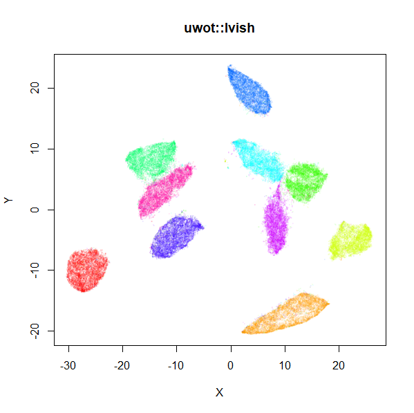

An R implementation of the Uniform Manifold Approximation and Projection (UMAP) method for dimensionality reduction (McInnes et al. 2018), that also implements the supervised and metric (out-of-sample) learning extensions to the basic method. Translated from the Python implementation.
News
June 28 2023 Version 0.1.16 has been released to CRAN. This is a very minor tweak to 0.1.15 to further support the new release of RcppAnnoy.
June 26 2023 Version 0.1.15 has been released to CRAN. This is to support a new release of RcppAnnoy, but there are also some bug fixes and other minor improvements. There are some new functions: optimize_graph_layout will carry out the UMAP optimization step on a sparse similiarity matrix, e.g. the output of similarity_graph. simplicial_set_union and simplicial_set_intersect provide ways to merge different views of the same data into one sparse similiarity matrix. As usual, NEWS.md has all the details.
August 22 2022 Just when you least expected it, version 0.1.14 has been released to CRAN (the NEWS file on CRAN calls it 0.1.13.9000 because I forgot to update that file, but let’s keep that amongst ourselves). This release includes a bug fix for umap_transform when you use external nearest neighbors and new function similarity_graph, to support extracting just the high dimensional fuzzy simplicial set.
August 16 2022 Version 0.1.13 has been released to CRAN (0.1.12 was a failed submission). Among other things you can now pass your own nearest neighbors data in sparse matrix form. Also there is an option to reproduce relative cluster density by approximating the densMAP method. See the NEWS page for more.
December 12 2021 Version 0.1.11 has been released to CRAN. It is now possible to get reproducible results (for a given value of set.seed) when running the optimization step with multiple threads (n_sgd_threads greater than 1). You may need to increase n_epochs to get similar levels of convergence. To run in this mode, set batch = TRUE. Thanks to Aaron Lun who came up with the design for this and also implemented it in his umappp C++ library. See NEWS.md for other changes.
December 15 2020 Version 0.1.10 has been released to CRAN. This is mainly to maintain compatibility with RcppAnnoy, but also a small change was made to avoid it grinding away pointlessly in the presence of NA values, based on an observation by David McGaughey on Twitter.
November 15 2020 Version 0.1.9 has been released to CRAN. The main addition is support for the Pearson correlation. Also, a slight license change from GPL-3 to GPL-3 or later.
August 1 2020 New metric supported: Pearson correlation (with metric = "correlation"). This should give similar results to the Python UMAP (and sklearn) implementation of the correlation metric.
March 16 2020 A new version (0.1.8) is on CRAN. This is a minor release in terms of features, but you can now export the UMAP graph (https://github.com/jlmelville/uwot/issues/47), and there are some bug fixes for: loading Annoy indexes (https://github.com/jlmelville/uwot/issues/31), reproducibility across platforms (https://github.com/jlmelville/uwot/issues/46) and we no longer use RcppParallel for the multi-threading support, which should lead to fewer installation problems.
March 4 2020 I had to cancel my submission of version 0.1.7 to CRAN because of a broken example in a library using uwot. In the mean time I have switched to using std::thread rather than tinythread++.
March 1 2020 Version 0.1.6 was rejected from CRAN due to undefined behavior issues that originate from RcppAnnoy and RcppParallel. I am hopeful that the Annoy behavior is fixed and a suitable version of RcppAnnoy will be released onto CRAN eventually. The RcppParallel issues originate with the use of tbb and seems much harder to deal with. As there is no way to use RcppParallel without tbb yet, I am temporarily replacing the use of RcppParallel with just a subset of the code needed to run parallel for loops with the tinythread++ library.
December 4 2019 Version 0.1.5 released on CRAN. This fixes a couple of crash bugs, including one where the R API was being called from inside a thread. This may have been causing the issues seen by users of monocle and seurat.
September 23 2019 Version 0.1.4 released on CRAN. This ensures compatibility with RcppAnnoy 0.0.13 when using load_uwot.
April 6 2019. uwot is now on CRAN. Also, some minor-to-horrible bugs in the lvish perplexity routine have been fixed.
For visualization purposes, it seems reasonable to use the old PRNG (pcg_rand = FALSE), along with multiple threads during SGD (n_sgd_threads = "auto"), and the UMAP gradient approximation (approx_pow = TRUE), which combined will show a very noticeable speed up during optimization. I have added a new parameter, fast_sgd, which if set to TRUE, sets these options for you.
Installing
From CRAN
install.packages("uwot")From github
uwot makes use of C++ code which must be compiled. You may have to carry out a few extra steps before being able to build this package:
Windows: install Rtools and ensure C:\Rtools\bin is on your path.
Mac OS X: using a custom ~/.R/Makevars may cause linking errors. This sort of thing is a potential problem on all platforms but seems to bite Mac owners more. The R for Mac OS X FAQ may be helpful here to work out what you can get away with. To be on the safe side, I would advise building uwot without a custom Makevars.
install.packages("remotes")
remotes::install_github("jlmelville/uwot")Example
library(uwot)
# See function man page for help
?umap
# Non-numeric columns are ignored, so in a lot of cases you can pass a data
# frame directly to umap
iris_umap <- umap(iris, n_neighbors = 50, learning_rate = 0.5, init = "random")
# Load mnist from somewhere, e.g.
# devtools::install_github("jlmelville/snedata")
# mnist <- snedata::download_mnist()
mnist_umap <- umap(mnist, n_neighbors = 15, min_dist = 0.001, verbose = TRUE)
# For high dimensional datasets (> 100-1000 columns) using PCA to reduce
# dimensionality is highly recommended to avoid the nearest neighbor search
# taking a long time. Keeping only 50 dimensions can speed up calculations
# without affecting the visualization much
mnist_umap <- umap(mnist, pca = 50)
# Use a specific number of threads
mnist_umap <- umap(mnist, n_neighbors = 15, min_dist = 0.001, verbose = TRUE, n_threads = 8)
# Use a different metric
mnist_umap_cosine <- umap(mnist, n_neighbors = 15, metric = "cosine", min_dist = 0.001, verbose = TRUE, n_threads = 8)
# If you are only interested in visualization, `fast_sgd = TRUE` gives a much faster optimization
mnist_umap_fast_sgd <- umap(mnist, n_neighbors = 15, metric = "cosine", min_dist = 0.001, verbose = TRUE, fast_sgd = TRUE)
# Supervised dimension reduction
mnist_umap_s <- umap(mnist, n_neighbors = 15, min_dist = 0.001, verbose = TRUE, n_threads = 8,
y = mnist$Label, target_weight = 0.5)
# Add new points to an existing embedding
mnist_train <- head(mnist, 60000)
mnist_test <- tail(mnist, 10000)
# You must set ret_model = TRUE to return extra data we need
# coordinates are in mnist_train_umap$embedding
mnist_train_umap <- umap(mnist_train, verbose = TRUE, ret_model = TRUE)
mnist_test_umap <- umap_transform(mnist_test, mnist_train_umap, verbose = TRUE)
# Save the nearest neighbor data
mnist_nn <- umap(mnist, ret_nn = TRUE)
# coordinates are now in mnist_nn$embedding
# Re-use the nearest neighor data and save a lot of time
mnist_nn_spca <- umap(mnist, nn_method = mnist_nn$nn, init = "spca")
# No problem to have ret_nn = TRUE and ret_model = TRUE at the same time
# Or just use the ret_extra parameter:
mnist_nn_and_model <- umap(mnist, ret_extra = c("model", "nn"))
# You can also get to the input fuzzy graph as a sparse matrix via "fgraph"
mnist_with_fgraph <- umap(mnist, ret_extra = c("fgraph"))
# equivalent for lvish is to use "P" (input probability matrix):
mnist_with_P <- lvish(mnist, ret_extra = c("P"))
# Calculate Petal and Sepal neighbors separately (uses intersection of the resulting sets):
iris_umap <- umap(iris, metric = list("euclidean" = c("Sepal.Length", "Sepal.Width"),
"euclidean" = c("Petal.Length", "Petal.Width")))
# Can also use individual factor columns
iris_umap <- umap(iris, metric = list("euclidean" = c("Sepal.Length", "Sepal.Width"),
"euclidean" = c("Petal.Length", "Petal.Width"),
"categorical" = "Species"))
# Batch mode allows for multiple threads while being reproducible
# (at the cost of needing more epochs for larger datasets)
set.seed(42)
iris_umap_batch <- umap(iris, batch = TRUE, n_sgd_threads = 4)
# This will give the same results
set.seed(42)
iris_umap_batch2 <- umap(iris, batch = TRUE, n_sgd_threads = 2)
all(iris_umap_batch == iris_umap_batch2)
# TRUE
# Batch mode uses Adam optimizer by default. Control the parameters with the opt_args list
iris_umap_batch <- umap(iris, batch = TRUE, opt_args = list(beta1 = 0.9, beta2 = 0.999))A Note on Reproducibility
uwot relies on the underlying compiler and C++ standard library on your machine and this can result in differences in output even with the same input data, arguments, packages and R version. If you require reproducibility between machines, it is strongly suggested that you stick with the same OS and compiler version on all of them (e.g. a fixed LTS of a Linux distro and gcc version). Otherwise, the following can help:
- Use the
tumapmethod instead ofumap. This avoid the use ofstd::powin gradient calculations. This also has the advantage of being faster to optimize. However, this gives larger clusters in the output, and you don’t have the ability to control that withaandb(orspreadandmin_dist) parameters. - For
umap, it’s better to provideaandbdirectly with a fixed precision rather than allowing them to be calculated via thespreadandmin_distparameters. For default UMAP, usea = 1.8956, b = 0.8006. - Use
approx_pow = TRUE, which avoids the use of thestd::powfunction. - Use
init = "spca"rather thaninit = "spectral"(although the latter is the default and preferred method for UMAP initialization).
In summary, your chances of reproducibility are increased by using:
Implementation Details
For small (N < 4096) and Euclidean distance, exact nearest neighbors are found using the FNN package. Otherwise, approximate nearest neighbors are found using RcppAnnoy. The supported distance metrics (set by the metric parameter) are:
- Euclidean
- Cosine
- Pearson Correlation (
correlation) - Manhattan
- Hamming
Exactly what constitutes the cosine distance can differ between packages. uwot tries to follow how the Python version of UMAP defines it, which is 1 minus the cosine similarity. This differs slightly from how Annoy defines its angular distance, so be aware that uwot internally converts the Annoy version of the distance. Also be aware that the Pearson correlation distance is the cosine distance applied to row-centered vectors.
If you need other metrics, and can generate the nearest neighbor info externally, you can pass the data directly to uwot via the nn_method parameter. See the Nearest Neighbor Data Format section for more details. Please note that the Hamming support is a lot slower than the other metrics. I do not recommend using it if you have more than a few hundred features, and even then expect it to take several minutes during the index building phase in situations where the Euclidean metric would take only a few seconds.
Coordinate initialization uses RSpectra to do the eigendecomposition of the normalized Laplacian.
The optional PCA initialization and initial dimensionality reduction uses irlba.
The smooth k-nearest neighbor distance and stochastic gradient descent optimization routines are written in C++ (using Rcpp, aping the Python code as closely as possible. It is my first time using Rcpp, so let’s assume I did a horrible job.
For the datasets I’ve tried it with, the results look at least reminiscent of those obtained using the official Python implementation. Below are results for the 70,000 MNIST digits (downloaded using the snedata package). On the left is the result of using the official Python UMAP implementation (via the reticulate package). The right hand image is the result of using uwot.
 |
 |
The project documentation contains some more examples.
Performance
December 31 2018 Updated timings, keeping better track of versions numbers.
To get a feel for the performance of uwot, here are some timings for processing the MNIST dataset, compared with some other methods. I wouldn’t take them very seriously, but they show that uwot is competitive with other methods.
| Package | Version | Arguments | Time |
|---|---|---|---|
| Rtsne | 0.15 | partial_pca = TRUE |
14m 13s |
| openTSNE (Python) | 0.3.0-py37h830ac7b_1000 | n_jobs=4 |
6m 4s |
| openTSNE (Python) | 0.3.0-py37h830ac7b_1000 | n_jobs=4, negative_gradient_method="bh" |
17m 56s |
| FIt-SNE (C++) | 1.0.0 | nthreads = 4 |
2m 43s |
| FIt-SNE (C++) | 1.0.0 |
nthreads = 4 + PCA to 50D |
1m 11s |
| LargeVis (C++) | feb8121 | -threads 4 |
12m 43s |
| largeVis (R package) | e51871e | save_neighbors = FALSE, save_edges = FALSE, threads = 4 |
33m 58s |
uwot::lvish |
0.0.0.9009 | n_threads = 4, n_sgd_threads = 4 |
5m 52s |
| UMAP (Python) | 0.3.7-py37_1000 | 1m 25s | |
| umap (R package) | 09f6020 | method = "naive" |
9m 14s |
| uwot | 0.0.0.9009 | n_threads = 0 |
3m 11s |
| uwot | 0.0.0.9009 | n_threads = 4 |
2m 0s |
| uwot | 0.0.0.9009 | n_threads = 4, approx_pow = TRUE |
1m 24s |
| uwot | 0.0.0.9009 | n_threads = 4, approx_pow = TRUE, n_sgd_threads = 4 |
1m 16s |
| uwot | 0.0.0.9009 | n_threads = 4, approx_pow = TRUE, pca = 50 |
48s |
Some notes on how these numbers were generated: I ran this on a Windows machine, using R 3.5.2 and Python 3.7.0. The official LargeVis implementation was built with Visual Studio 2017 Community Edition and may not be properly optimized (the VS solution is available in my fork).
For R packages, the MNIST data was downloaded via the snedata package. For Python packages, the sklearn.datasets.fetch_mldata('MNIST original') was used. The LargeVis source code contains a MNIST example with the data already present.
For FIt-SNE, I used the provided Windows binary via the R wrapper (and hence used the MNIST data from the snedata package). The reported time for second FIt-SNE entry in the table and includes the 13 seconds it takes to reduce the dimensionality to 50 via PCA, using irlba (this is the same package and dimension reduction used by Rtsne and the last reported time for uwot).
The default openTSNE uses the same FFT approach that FIt-SNE does, so I don’t know why it’s much slower, apart from the use of the numpy version of FFT rather than the FFTW library, but my understanding was that it shouldn’t make much difference with a dataset the size of MNIST. Perhaps this is a Windows thing.
For uwot, the bottleneck with typical settings is the nearest neighbor search, which is currently provided by Annoy, whereas the Python implementation uses pynndescent, a nearest neighbor descent approach.
On the optimization side of things, uwot defaults are conservative. Using approx_pow = TRUE uses the fastPrecisePow approximation to the pow function suggested by Martin Ankerl. For what I think seem like typical values of b (between 0.7 and 0.9) and the squared distance (0-1000), I found the maximum relative error was about 0.06. However, I haven’t done much testing, beyond looking to see that results from the examples page are not obviously worsened. Results in the table above with approx_pow = TRUE do show a worthwhile improvement.
Using n_sgd_threads with more than 1 thread will not give reproducible results, but should not behave any worse than LargeVis in that regard, so for many visualization needs, this is also worth trying.
Memory Usage
By the deeply unscientific method of me looking at how much memory the R session was taking up according to the Task Manager, processing MNIST with four threads saw the memory usage increase by nearly 1 GB at some points. There are some manual calls to gc() after some stages to avoid holding onto unused memory for longer than usual. The larger the value of n_neighbors, the more memory you can expect to take up (see, for example, the discussion of the lvish function below).
Multi-threading support
RcppParallel is used for the nearest neighbor index search, the smooth knn/perplexity calibration, and the optimization, which is the same approach that LargeVis takes.
You can (and should) adjust the number of threads via the n_threads, which controls the nearest neighbor and smooth knn calibration, and the n_sgd_threads parameter, which controls the number of threads used during optimization. For the n_threads, the default is half of whatever RcppParallel thinks should be the default. For n_sgd_threads the default is 0, which ensures reproducibility of results with a fixed seed.
I have also exposed the grain_size parameter. If a thread would process less than grain_size number of items, then no multithreading is carried out.
I’ve not experienced any problems with using multiple threads for a little while, but if you have any problems with crashing sessions, please file an issue.
Limitations and Other Issues
- As noted in the Implementation Details, only Euclidean, Cosine, Hamming, Pearson Correlation, and Manhattan distances are supported for finding nearest neighbors from data frame and dense matrix input. For other metrics, you can pass nearest neighbor data directly: see the Nearest Neighbor Data Format section. Or if you can calculate a distance matrix for your data, you can pass it in as
distobject. For larger distance matrices, you can pass in asparseMatrix(from the Matrix package). Neither approach is supremely efficient at the moment. Proper sparse matrix support is limited by the nearest neighbor search routine: Annoy is intended for dense vectors. Adding a library for sparse nearest neighbor search would be a good extension. - If
n_sgd_threadsis set larger than1, then even if you useset.seed, results of the embeddings are not repeatable, This is because there is no locking carried out on the underlying coordinate matrix, and work is partitioned by edge not vertex and a given vertex may be processed by different threads. The order in which reads and writes occur is of course at the whim of the thread scheduler. This is the same behavior as largeVis. - I haven’t applied
uwoton anything much larger than MNIST and Fashion MNIST (so at least around 100,000 rows with 500-1,000 columns works fine). Bear in mind that Annoy itself says it works best with dimensions < 100, but still works “surprisingly well” up to 1000. - Experience with COIL-100, which has 49,152 features, suggests that Annoy will definitely struggle with datasets of this dimensionality. I strongly recommend using the
pcaoption to reduce the dimensionality, e.gpca = 100. - The spectral initialization default for
umap(and the Laplacian Eigenmap initialization,init = "laplacian") can sometimes run into problems. If it fails to converge it will fall back to random initialization, but on occasion I’ve seen it take an extremely long time (a couple of hours) to converge. Recent changes have hopefully reduced the chance of this happening, but if initialization is taking more than a few minutes, I suggest stopping the calculation and using the scaled PCA (init = "spca") instead. -
R CMD checkcurrently reports the following note:GNU make is a SystemRequirements., which is expected and due to using RcppParallel. On Linux, it sometimes notes that thelibssub-directory is over 1 MB. I am unsure if this is anything to worry about.
Other Methods
Some other dimensionality reduction methods are also available in uwot:
t-UMAP
If you choose the UMAP curve parameters to be a = 1 and b = 1, you get back the Cauchy distribution used in t-Distributed Stochastic Neighbor Embedding and LargeVis. This also happens to significantly simplify the gradient leading to a noticeable speed-up: for MNIST, I saw the optimization time drop from 66 seconds to 18 seconds. The trade off is that you will see larger, more spread-out clusters than with the typical UMAP settings (they’re still more compact than you see in t-SNE, however). To try t-UMAP, use the tumap function:
mnist_tumap <- tumap(mnist, n_neighbors = 15, verbose = TRUE)Note that using umap(a = 1, b = 1) doesn’t use the simplified gradient, so you won’t see any speed-up that way.
lvish: a LargeVis-ish method
As UMAP’s implementation is similar to LargeVis in some respects, this package also offers a LargeVis-like method, lvish:
# perplexity, init and n_epoch values shown are the defaults
# use perplexity instead of n_neighbors to control local neighborhood size
mnist_lv <- lvish(mnist, perplexity = 50, init = "lvrand", n_epochs = 5000,
verbose = TRUE)
# Make hilarious Lembas bread jokeAlthough lvish is like the real LargeVis in terms of the input weights, output weight function and gradient, and so should give results that resemble the real thing, note that:
- Like the real LargeVis, matrix input data is normalized by centering each column and then the entire matrix is scaled by dividing by the maximum absolute value. This differs from
umap, where no scaling is carried out. Scaling can be controlled by thescaleparameter. - Nearest neighbor results are not refined via the neighbor expansion method. The
search_kparameter is twice as large than Annoy’s default to compensate. - The other nearest neighbor index parameter,
n_trees, is not dynamically chosen based on data set size. In LargeVis, it ranges between 10 (for N < 100,000) and 100 (for N > 5,000,000). Thelvishdefault of 50 would cover datasets up to N = 5,000,000, and combined with the defaultsearch_k, seems suitable for the datasets I’ve looked at. - Negative edges are generated by uniform sampling of vertexes rather than their degree ^ 0.75.
- The default number of epochs is dataset-dependent, to generate the same number of edge samples that would be used by the default settings of the reference LargeVis implementation. This normally results in a substantially longer run time than for
umap. You may be able to get away with fewer epochs, and using the UMAP initialization ofinit = "spectral", rather than the default Gaussian random initialization (init = "lvrand") can help.
The left-hand image below is the result of running the official LargeVis implementation on MNIST. The image on the right is that from running lvish with its default settings (apart from setting n_threads = 8). Given they were both initialized from different random configurations, there’s no reason to believe they would be identical, but they look pretty similar:
 |
 |
Because the default number of neighbors is 3 times the perplexity, and the default perplexity = 50, the nearest neighbor search needs to find 150 nearest neighbors per data point, an order of magnitude larger than the UMAP defaults. This leads to a less sparse input graph and hence more edges to sample. Combined with the increased number of epochs, expect lvish to be slower than umap: with default single-threaded settings, it took about 20 minutes to embed the MNIST data under the same circumstances as described in the “Performance” section. With n_threads = 4, it took 7 minutes. In addition, storing those extra edges requires a lot more memory than the umap defaults: my R session increased by around 3.2 GB, versus 1 GB for umap.
As an alternative to the usual Gaussian input weight function, you can use the k-nearest neighbor graph itself, by setting kernel = "knn". This will give each edge between neighbors a uniform weight equal to 1/perplexity, which leads to each row’s probability distribution having the target perplexity. This matrix will then be symmetrized in the usual way. The advantage of this is that the number of neighbors is reduced to the same as the perplexity (indeed, the n_neighbors parameter is ignored with this setting), and leads to less memory usage and a faster runtime. You can also get away with setting the perplexity to a much lower value than usual with this kernel (e.g. perplexity = 15) and get closer to UMAP’s performance. If you use the default LargeVis random initialization, you will still need more epochs than UMAP, but you can still expect to see a big improvement. Something like the following works for MNIST:
mnist_lv <- lvish(mnist, kernel = "knn", perplexity = 15, n_epochs = 1500,
init = "lvrand", verbose = TRUE)See the lvish examples page for more results.
Mixed Data Types
The default approach of UMAP is that all your data is numeric and will be treated as one block using the Euclidean distance metric. To use a different metric, set the metric parameter, e.g. metric = "cosine".
Treating the data as one block may not always be appropriate. uwot now supports a highly experimental approach to mixed data types. It is not based on any deep understanding of topology and sets, so consider it subject to change, breakage or completely disappearing.
To use different metrics for different parts of a data frame, pass a list to the metric parameter. The name of each item is the metric to use and the value is a vector containing the names of the columns (or their integer id, but I strongly recommend names) to apply that metric to, e.g.:
this will treat columns A1 and A2 as one block of data, and generate neighbor data using the Euclidean distance, while a different set of neighbors will be generated with columns B1, B2 and B3, using the cosine distance. This will create two different simplicial sets. The final set used for optimization is the intersection of these two sets. This is exactly the same process that is used when carrying out supervised UMAP (except the contribution is always equal between the two sets and can’t be controlled by the user).
You can repeat the same metric multiple times. For example, to treat the petal and sepal data separately in the iris dataset, but to use Euclidean distances for both, use:
metric = list("euclidean" = c("Petal.Width", "Petal.Length"),
"euclidean" = c("Sepal.Width", "Sepal.Length"))Indexing
As the iris example shows, using column names can be very verbose. Integer indexing is supported, so the equivalent of the above using integer indexing into the columns of iris is:
metric = list("euclidean" = 3:4, "euclidean" = 1:2)but internally, uwot strips out the non-numeric columns from the data, and if you use Z-scaling (i.e. specify scale = "Z"), zero variance columns will also be removed. This is very likely to change the index of the columns. If you really want to use numeric column indexes, I strongly advise not using the scale argument and re-arranging your data frame if necessary so that all non-numeric columns come after the numeric columns.
Categorical columns
supervised UMAP allows for a factor column to be used. You may now also specify factor columns in the X data. Use the special metric name "categorical". For example, to use the Species factor in standard UMAP for iris along with the usual four numeric columns, use:
metric = list("euclidean" = 1:4, "categorical" = "Species")Factor columns are treated differently from numeric columns:
- They are always treated separately, one column at a time. If you have two factor columns,
cat1, andcat2, and you would like them included in UMAP, you should write:
metric = list("categorical" = "cat1", "categorical" = "cat2", ...)As a convenience, you can also write:
but that doesn’t combine cat1 and cat2 into one block, just saves some typing.
- Because of the way categorical data is intersected into a simplicial set, you cannot have an X
metricthat specifies onlycategoricalentries. You must specify at least one of the standard Annoy metrics for numeric data. Foriris, the following is an error:
# wrong and bad
metric = list("categorical" = "Species")Specifying some numeric columns is required:
# OK
metric = list("categorical" = "Species", "euclidean" = 1:4)- Factor columns not explicitly included in the
metricare still removed as usual. - Categorical data does not appear in the model returned when
ret_model = TRUEand so does not affect the project of data used inumap_transform. You can still use the UMAP model to project new data, but factor columns in the new data are ignored (effectively working like supervised UMAP).
Overriding global options
Some global parameters can be overridden for a specific data block by providing a list as the value for the metric, containing the vector of columns as the only unnamed element, and then the over-riding keyword arguments. An example:
umap(
X,
pca = 40,
pca_center = TRUE,
metric = list(
euclidean = 1:200,
euclidean = list(201:300, pca = NULL),
manhattan = list(300:500, pca_center = FALSE)
)
)In this case, the first euclidean block with be reduced to 40 dimensions by PCA with centering applied. The second euclidean block will not have PCA applied to it. The manhattan block will have PCA applied to it, but no centering is carried out.
Currently, only pca and pca_center are supported for overriding by this method, because this feature exists only to allow for the case where you have mixed real-valued and binary data, and you want to carry out PCA on both. It’s typical to carry out centering on real-value data before PCA, but not to do so with binary data.
y data
The handling of y data has been extended to allow for data frames, and target_metric works like metric: multiple numeric blocks with different metrics can be specified, and categorical data can be specified with categorical. However, unlike X, the default behavior for y is to include all factor columns. Any numeric data found will be treated as one block, so if you have multiple numeric columns that you want treated separately, you should specify each column separately:
target_metric = list("euclidean" = 1, "euclidean" = 2, ...)I suspect that the vast majority of y data is one column, so the default behavior will be fine most of the time.
Nearest Neighbor Data Format
The Python implementation of UMAP supports lots of distance metrics; uwot does not, because it depends on the distance metrics supported by RcppAnnoy, which in turn depends on those supported by Annoy. For more flexibility, at the cost of convenience, you can generate nearest neighbor data for X by some other means and pass that to umap (or tumap or lvish) directly via the nn_method parameter.
Nearest Neighbor Graph Format
The format expected by nn_method is a list containing the following two entries:
-
idx: a matrix of dimensionn_vertices x n_neighbors, where each row contains the indexes (starting at1) of the nearest neighbors of each item (vertex) in the dataset. Each item is always the nearest neighbor of itself, so the first element in rowishould always bei. If it isn’t then either you are using a really weird non-metric distance or your approximate nearest neighbor method is returning way too approximate results. In either case, you should expect bad results. -
dist: a matrix of dimensionn_vertices x n_neighbors, where each row contains the distances of the nearest neighbors of each item (vertex) in the dataset, in Each item is always the nearest neighbor of itself, so the first element in rowishould always be0.0.
Sparse Distance Matrix Format
Alternatively, you can pass a sparse distance matrix where:
- the format should be
dgCMatrix(the typical sparse matrix format). - non-zero entries are the distances.
- dimensions are of
n_vertices x n_verticesforumapandn_model_vertices x n_verticesforumap_transform- to put it another way: the neighbor distances should be arranged so that the non-zero entries in the
ith column of the matrix contains the distances between observationiand its nearest neighbors.
- to put it another way: the neighbor distances should be arranged so that the non-zero entries in the
- An advantage of using a sparse distance matrix: you are not restricted to a fixed value of
n_neighborsfor each observation. Each column can contain a different number of non-zero distances. See the paper by Dalmia and Sia for why you might want to do this. The graph edge weight calculation will be adjusted to account for the different number of neighbors of each observation. There must be at least one neighbor for each observation. - Explicit zero distances will be removed from the matrix. This is in contrast to the use of the nearest neighbor list matrix format where typically the zero distance between an observation and itself is found as part of the nearest neighbor search routine. The sparse distance matrix approach will account for the zero self-distance being implicit. To keep explicit zero distances between other observations set them to a small but non-zero value, e.g.
1e-10. - A slight disadvantage with using a distance matrix is that the distances need to be sorted.
- Sparse distance matrix input is not currently supported for the
lvishmethod.
If you use pre-computed nearest neighbor data, be aware that:
- You can’t use pre-computed nearest neighbor data and also use
metric. - You can explicitly set
Xto NULL, as long as you don’t try and use an initialization method that makes use ofX(init = "pca"orinit = "spca"). - You can transform new data by setting
ret_model = TRUE. You must provideumap_transformwith the distances between new data and the original data via itsnn_methodparameter.
Here’s an example of using pre-computed nearest neighbor data using the even-numbered observations in iris to build an initial model and then transforming the odd-numbered observations. This relies on some internal uwot functions which I do not promise have a stable API (i.e. this may example may be broken when you read this), but it gives you the general idea:
iris_even <- iris[seq(2, nrow(iris), 2), ]
iris_odd <- iris[seq(1, nrow(iris), 2), ]
iris_even_nn <- uwot:::annoy_nn(
X = uwot:::x2m(iris_even),
k = 15,
metric = "euclidean",
ret_index = TRUE
)
iris_odd_nn <- annoy_search(
X = uwot:::x2m(iris_odd),
k = 15,
ann = iris_even_nn$index
)
# Delete the Annoy index, force the transform method to use the nn distances
# directly
iris_even_nn$index <- NULL
iris_even_umap <-
umap(
X = NULL,
nn_method = iris_even_nn,
ret_model = TRUE
)
iris_odd_transform <-
umap_transform(X = NULL, iris_even_umap, nn_method = iris_odd_nn)Exporting nearest neighbor data from uwot
If you set ret_nn = TRUE, the return value of umap will be a list, and the nn item contains the nearest neighbor data in a format that can be used with nn_method. This is handy if you are going to be running UMAP multiple times with the same data and n_neighbors and scale settings, because the nearest neighbor calculation can be the most time-consuming part of the calculation.
Normally the contents of nn is itself a list, the value of which is the nearest neighbor data. The name is the type of metric that generated the data. As an example, here’s what the first few items of the iris 5-NN data should look like:
lapply(umap(iris, ret_nn = TRUE, n_neighbors = 5)$nn$euclidean, head)
$`idx`
[,1] [,2] [,3] [,4] [,5]
[1,] 1 18 5 40 29
[2,] 2 35 46 13 10
[3,] 3 48 4 7 13
[4,] 4 48 30 31 3
[5,] 5 38 1 18 41
[6,] 6 19 11 49 45
$dist
[,1] [,2] [,3] [,4] [,5]
[1,] 0 0.1000000 0.1414214 0.1414214 0.1414214
[2,] 0 0.1414214 0.1414214 0.1414214 0.1732051
[3,] 0 0.1414214 0.2449490 0.2645751 0.2645751
[4,] 0 0.1414214 0.1732051 0.2236068 0.2449490
[5,] 0 0.1414214 0.1414214 0.1732051 0.1732051
[6,] 0 0.3316625 0.3464102 0.3605551 0.3741657If for some reason you specify ret_nn while supplying precomputed nearest neighbor data to nn_method, the returned data should be identical to what you passed in, and the list item names will be precomputed.
Multiple neighbor data
As discussed under the Mixed Data Types section, you can apply multiple distance metrics to different parts of matrix or data frame input data. if you do this, then ret_nn will return all the neighbor data. The list under nn will now contain as many items as metrics, in the order they were specified. For instance, if the metric argument is:
metric = list("euclidean" = c("Petal.Width", "Petal.Length"),
"cosine" = c("Sepal.Width", "Sepal.Length"))The nn list will contain two list entries. The first will be called euclidean and the second cosine.
If you have access to multiple distance metrics, you may also provide multiple precomputed neighbor data to nn_method in the same format: a list of lists, where each sublist has the same format as described above (i.e. the two matrices, idx and dist). The names of the list items are ignored, so you don’t need to set them. Roughly, do something like this:
nn_metric1 <- list(idx = matrix(...), dist = matrix(...))
nn_metric2 <- list(idx = matrix(...), dist = matrix(...))
umap_res <- umap(nn_method = list(nn_metric1, nn_metric2), ...)The different neighbor data must all have the same number of neighbors, i.e. the number of columns in all the matrices must be the same.
Numeric y
If you are using supervised UMAP with a numeric y, then you can also pass nearest neighbor data to y, using the same format as above. In this case the nearest neighbors should be with respect to the data in y.
Note that you cannot pass categorical y as nearest neighbor data. This is because the processing of the data goes through a different code path that doesn’t directly calculate nearest neighbors: if y is a factor, when there are only a small number of levels, the number of neighbors of an item can be vastly larger than n_neighbors.
Nearest neighbor data for y is not returned from umap for re-use.
License
uwot directly contains code that originates with RcppParallel, which is GPLv2.
Citation
If you want to cite the use of uwot, then use the output of running citation("uwot") (you can do this with any R package).
See Also
- The UMAP reference implementation and publication.
- There is now a UMAP package on CRAN (see also its github repo).
- Another R package is umapr, but it is no longer being maintained.
- umappp is a full C++ implementation, and yaumap provides an R wrapper. The batch implementation in umappp are the basis for uwot’s attempt at the same.
-
uwotuses the RcppProgress package to show a text-based progress bar whenverbose = TRUE.